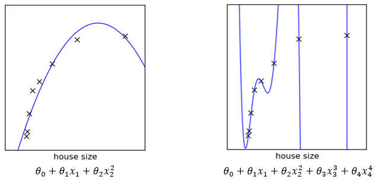
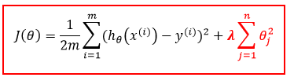

Notes Logistic Regression - Standford ML Andrew Ng
Jose Parreno Garcia
March 2018
library(knitr)1 What is Logistic Regression?
Both linear and logistic regression are used to predict certain results taking into consideration previous historical data. The main difference between them is the type of prediction each one does: 1. Linear regression ??? predicts any value. In order to do this, linear regression takes as input independent values CONTINUOUS VARIBLES, in other words, variables that can take any value, and hence, our prediction will also be a continuous variable and can take any value. 2. Logistic regression ??? it predicts the probability of bounded possible outcomes, in other words, logistic regression is a CLASSIFICATION algorithm.
As mentioned, logistic regression is one of main and most simple CLASSIFICATION algorithms. It extends the idea of linear regression to cases where the dependent variable, y, only has two possible outcomes, called classes (careful, this only applies with binary logistic regression; multiple logistic regression deals with situations where the outcome can have three or more possible types (e.g., “disease A” vs. “disease B” vs. “disease C”)).
Examples of dependent variables that could be used with logistic regression are predicting whether a new business will succeed or fail, predicting the approval or disapproval of a loan, and predicting whether a stock will increase or decrease in value. These are all called classification problems, since the goal is to figure out which class each observation belongs to.
1.1 Intuition behind logistic regression
The following images show different classification examples.
For us humans, it would be really easy to differentiate groups in each of the datasets, and we would immediately be able to draw a boundary that separated them, but, how can a machine do this? Moving onwards in this blog, we will be focusing on the example shown in the 3 figure, which represents a binary classification.
2 Introducing the logistic function
The logistic function is a model of the well-known sigmoid function, and the mathematical function which represent these is the following:

For the sake of curiosity, just mention that the logistic function is used to describe many real-world situations, for example, population growth. This is easily understood by looking at the normalised graph: the initial stages suffer an exponential growth, but after some time, due to the competition for certain resources (bottle neck), the growth rate decreases until it gets to a stalemate and there is no growth.
This is really cool, but how is this going to help us determine the probability of a classifying data into different classes?
2.1 Steps to calculate logit
2.1.1 Step 1
The first step is to compute the probability that an observation belongs to class 1, using the Logistic Response Function. In this case, our t parameter (instead of being a temporal response), will be the linear regression equation:
The coefficients, or \(??\) values, are selected to maximize the likelihood of predicting a high probability for observations actually belonging to class 1, and predicting a low probability for observations actually belonging to class 0. See the graph to hint the coefficients we would like to achieve:
2.1.2 Additional info for step 1
Another way to understanding the probabilities to classify elements into classes is by using ODDS:
This called the “Logit” and looks like linear regression.
2.1.3 Step 2
In the second step of logistic regression, a threshold value is used to classify each observation into one of the classes. For example, if we chose a threshold of 0.5, that would mean that if \(P(y=1) > 0.5\), then the observation would be classified into class 1, and the rest into class 0.
The threshold value is something the user can specify, so, which is the best value for it? This election often depends on error preferences and there are two types of errors that we need to take into consideration: false positives, and false negatives.
A false positive error is made when the model predicts class 1, but the observation actually belongs to class 0. A false negative error is made when the model predicts class 0, but the observation actually belongs to class 1. The perfect model would classify all classes correctly: all 1´s (or trues) as 1´s, and all 0´s (or false) as 0´s. We would have then FN = FP = 0!! Fantastic!
3 Effect of threshold in model performance
As we all know, the perfect predictive model doesn’t exist. So what happens when we choose different threshold values?
- Higher threshold value. Classify as 1 if P(y=1) > 0.7. The model is being more restrictive when classifying as 1´s, and therefore, more False Negative errors will be made.
- Lower threshold value. . Classify as 1 if P(y=1) > 0.3. The model is now being less strict and we are classifying more examples as class 1, therefore, we are making more false positives errors.
Ok, this is all very good to know, but how to choose the strategy to follow? How do we know if we want to make more FN errors or more FP errors? A fair answer to the previous question would be that to know which strategy to follow can initially depend on your experience and risk-averse problem you are trying to solve. Lets present 2 examples:
Example 1: Treating patients.
One application where decision-makers often have an error preference is in disease prediction. Suppose you built a model to predict whether or not someone will develop heart disease in the next 10 years. We will consider class 1 to be the outcome in which the person does develop heart disease, and class 0 the outcome in which the person does not develop heart disease. If you pick a high threshold, you will tend to make more false negative errors, which means that you predicted that the person would not develop heart disease, but they actually did. If you pick a lower threshold, you will tend to make more false positive errors, which means that you predicted they would develop heart disease, but they actually did not. In this case, a false positive error is often preferred. Unnecessary resources might be spent treating a patient who did not need to worry, but you did not let as many patients go untreated (which is what a false negative error does).
Example 2: Email junkbox.
Now, let’s consider spam filters. Almost every email provider has a built in spam filter that tries to detect whether or not an email message is spam. Let’s classify spam messages as class 1 and non-spam messages as class 0. Then if we build a logistic regression model to predict spam, we will probably want to select a high threshold. Why? In this case, a false positive error means that we predicted a message was spam, and sent it to the spam folder, when it actually was not spam. We might have just sent an important email to the junk folder! On the other hand, a false negative error means that we predicted a message was not spam, when it actually was. This creates a slight annoyance for the user (since they have to delete the message from the inbox themselves) but at least an important message was not missed.
To understand better how to choose the threshold value, we make use of the confusion matrix and the ROC curve.
3.1 Confusion matrix
A confusion matrix, also known as a contingency table or an error matrix, is a specific table layout that allows visualization of the performance of an algorithm. Each column of the matrix represents the instances in a predicted class, while each row represents the instances in an actual class. The name stems from the fact that it makes it easy to see if the system is confusing two classes (i.e. commonly mislabelling one as another). We have actually seen a confusion matrix in this paper before, with the image of true positives, true negatives, false positives and false negatives. Here goes another equivalent image:
Numeric example
Imagine we have created a classification system that has been trained to distinguish between cats, dogs and rabbits, a confusion matrix will summarize the results of testing the algorithm for further inspection. Assuming a sample of 27 animals - 8 cats, 6 dogs, and 13 rabbits, the resulting confusion matrix could look like the one below.
3.1.1 Calculating the parameters from the confusion matrix
. SENSITIVITY: measures the proportion of positives which are correctly identified as such . SPECIFICITY: measures the proportion of negatives which are correctly identified as such . ACCURACY: measures the proportion of positives and negatives that have been correctly labelled.
3.1.2 Small comment on accuracy
Needless to say, that if you test different thresholds and you achieve better accuracies, obviously you are doing the correct thing. But, you have to take into consideration a small weakness if you use accuracy as your analysis tool: it will yield misleading results if the data set is unbalanced (that is, when the number of samples in different classes vary greatly). For example, if there were 95 cats and only 5 dogs in the data set, the classifier could easily be biased into classifying all the samples as cats. The overall accuracy would be 95%, but in practice the classifier would have a 100% recognition rate for the cat class but a 0% recognition rate for the dog class. Therefore, if you goal was to be build a machine that was able to classify both types, using accuracy wouldn’t be useful, because dogs wouldn’t be detected. This is why, you always have to study the results of the data and not rely solely on a single number or parameter.
3.2 ROC curves
In statistics, a receiver operating characteristic (ROC), or ROC curve, is a graphical plot that illustrates the performance of a binary classifier system as its discrimination threshold is varied. The curve is created by plotting the true positive rate (sensitivity) against the false positive rate (1 - specificity) at various threshold settings.
The best possible prediction method would yield a point in the upper left corner or coordinate (0,1) of the ROC space, representing 100% sensitivity (no false negatives) and 100% specificity (no false positives). The (0,1) point is also called a perfect classification.
3.2.1 AUC - Area under the curve
The ROC curve motivates an important metric for classification problems: the AUC, or Area Under the Curve. The AUC of a model gives the area under the ROC curve, and is a number between 0 and 1. The higher the AUC, the more area under the ROC curve, and the better the model. The AUC of a model can be interpreted as the model’s ability to distinguish between the two different classes. If the model were handed two random observations from the dataset, one belonging to one class and one belonging to the other class, the AUC gives the proportion of the time when the observation from class 1 has a higher predicted probability of being in class 1. If you were to just guess which observation was which, this would be an AUC of 0.5. So a model with an AUC greater than 0.5 is doing something smarter than just guessing, but we want the AUC of a model to be as close to 1 as possible.
4 Hypothesis
Recall that the hypothesis expression for linear regression was:
Logistic regression cannot rely solely on a linear expression to classify, and in addition to that, using a linear classifier boundary requires the user to establish a threshold where the predicted continuous probabilities would be grouped into the different classes. This is why logistic regression makes use of the sigmoid function. Let me present the logistic regression hypothesis function:
5 Understanindg the sigmoid function
5.1 EXAMPLE 1: General sigmoid function
Let’s say we decide to establish a threshold of 0.5 (just to adapt to the sigmoid function cut in the Y-axis). So:
In order to achieve this:
5.2 EXAMPLE 2: Linear boundary
We have calculated the \(\theta\) parameters of the linear expression and have the following data:
Using the same analysis as we did for the general sigmoid function:
5.3 EXAMPLE 3: Circular boundary
We have calculated the \(\theta\) parameters of the linear expression and have the following data:
Using the same analysis as we did for the general sigmoid function:

IMPORTANT NOTE! From these 3 examples we observe that the decision boundary is not directly defined by the training dataset, but by the \(\theta\) parameters.
6 Cost function
Now that we know what the expression of our logistic regression hypothesis is, we need to know how to define the cost function in order to evaluate the errors a logistic model is going to make. Recall the cost function for linear regression:
If we minimized this function applying our new \(h_??(x^{(i)})\) hypothesis we cannot assure that we will converge the global minimum of the cost function! As \(h_??(x)=1/(1+e^{(??^T X)} )\) is not linear we might end up in a local minimum. Therefore, our new cost function will be:
6.1 Simplified cost function
Thankfully, as we are dealing with a binary classification problem and y can only be 0 or 1, then the cost function can be simplified to the following expression:
6.2 Choosing the ?? parameters: using gradient descent
The gradient descent iterative process used in logistic regression is exactly the same than the one used for linear regression. The only difference between both, is the input hypothesis. Therefore, the gradient descent algorithm is again:
7 Multiclass classification
Until now we have been only focusing on binary classification, but what happens when instead of classifying with a Yes or a No, we want to classify with many classes? For example, classifying your emails in family, work, travel, bills, etc? The answer to this is very simple: we run binary classification for all possible classes and then pick the one with the highest value.

7.1 Overfitting/underfitting
The best way to understand what is over and underfitting is showing 3 simple examples:
Underfitting: clearly the model is too simple and requires additional features to adjust better to the data Overfitting: the model adjust incredibly well to the training data, but if that model is applied to the unseen data it will fail to generalise new examples.
How to know if our model is overfitting? 1. In very simple models were we only use 2 parameters, we can plot the data (just like we did above) and check if the model is under or overfitting. 2. But with model were there number of features is really high, we cannot take this approach as the visualisation of the data would be extremely complicated. 2.1. This can be solved by feature reduction to then plot the data, but this will be explained in further posts. 2.2. It can be also solved by REGULARIZATION.
8 Introducing regularization
Suppose we have the previous models and that the regression models are the following:

The general idea would be that we want to make the high order parameters (??3 and ??4) really small to have a simple model that would be less prone to overfitting.
Perfect, by doing this we have reduced our function to a second order model which is simpler. But again, in this case we know which the high order terms are. How do we then deal with the general case were we might have 100 features? How do we know which is/are the high order terms? In order to tackle this issue, we introduce the REGULARIZATION PARAMETER.
8.1 Regularised linear regression
Cost function:

Gradient descent:
8.2 Regularised logistic regression
Cost function:
Gradient descent:
8.3 Final intuitation for the regularization parameter
Even though in following posts we will be looking into this regularization parameters in more details, I wanted to show you a simple example on how can \(\lambda\) affect the model. Suppose we have the same example as before and we choose a huge value for \(\lambda\):
9 Visualising the data
In this case we will learn implement regularized logistic regression to predict whether microchips from a fabrication plant passes quality assurance (QA). During QA, each microchip goes through various tests to ensure it is functioning correctly. Suppose you are the product manager of the factory and you have the test results for some microchips on two different tests. From these two tests, you would like to determine whether the microchips should be accepted or rejected. To help you make the decision, you have a dataset of test results on past microchips, from which you can build a logistic regression model.
Data sample:

Plotting the data:
The figure shows that our dataset cannot be separated into positive and negative examples by a straight-line through the plot. Therefore, a straight-forward application of logistic regression will not perform well on this dataset since logistic regression will only be able to find a linear decision boundary.
9.1 How to fix this?
- One way is to create more features more each data point, ie, creating polynomial features for each x1 and x2. For example, we could create a vector. What have we achieved with this? Well, firstly we had only a 2 dimensional vector with x1 and x2, and now we have 28 dimensional vector. Obviously, applying a straight forward logistic regression on a 28 dimensional vector will have a more complex decision boundary and will appear nonlinear. HOWEVER, this strategy is much more susceptible to overfitting.

- To try to apply a non-linear decision boundary and at the same time tackle the overfitting issue that a high dimensional vector can introduce, we will introduce regularization parameters to our logistic regression model.
9.2 Calculations
To show a numeric example of how the choosing / optimization of the theta values affect the cost of the model, let´s say we decide that THETA parameters are all equal to zero:
This is our starting point to compare if the model is actually converging to a minimum. In linear regression, we understood how gradient descent worked. In this case, I want to present another way to deal with the optimization of the theta parameters that minimize the cost function. This method is a function already built in Matlab called FMINUNC. Here is the code to use it:
% Set regularization parameter lambda to 1 (you should vary this) lambda = 1;
% Set Options options = optimset(‘GradObj’, ‘on’, ‘MaxIter’, 400);
% Optimize [theta, J, exit_flag] = … fminunc(@(t)(costFunctionReg(t, X, y, lambda)), initial_theta, options);
fminunc will call the cost function (in this case, you have to code this function yourself. You can implement the simplified cost function for logistic regression shown above), a random initial theta, and some debugging parameters like the maximum iterations we want and that we want fminunc to return both the theta parameters and the cost function.
The results show that we have improved the model by choosing some thetas that have drastically reduced the magnitude of the cost function. Let´s plot the decision boundary that the logistic regression model has created:

The graph shows the linear boundary the logistic regression model has created. It pretty much divides correctly most example, although there are some were the model incorrectly predicts the real outcome. Let´s evaluate the accuracy of these training examples (in this case we haven´t produced a test set in which to produce accuracy tests of unseen data). As we saw in logistic theory, the logistic regression model returns probabilities of each of the examples belonging to different classes. To finally classify in a binary classification model like this one, we need to establish a threshold. Let´s evaluate the performance of the model with different thresholds. These different selection will show the effect the threshold has in the model´s accuracy and which one would suit best your specific problem.
Taking into consideration the nature of the problem, if we want to detect those microchips that have defects we need to decide which threshold are we going to apply to the model. This decision would need to take into consideration many factors such as chip manufacturing costs (just in case we throw away non-defective chips that were labelled as defective), costs related to delivering bad quality chips etc. Let´s say that we want to detect as many defective chips as possible. To do that we will like to only categorise as 1´s (accepted) the ones that have a very high probability, in other words, their quality parameters are nearly perfect. If we are very selective when categorising as 1´s, then we are allowing more chips to be labelled as defective. Our accuracy would decrease, but you would be flagging nearly all (if not all) defective chips. Again, this is just a really simplified way of thinking about quality checks but it is useful to understand threshold selection and the logistic regression classification model.
9.3 Effect of lambda
For “educational” purposes, just as I did with different threshold selections, in this case we will see the effect of lambda in the logistic regression model. In the theory section, we learnt that lambda acts as a parameter that controls high order features, in other words, it control under and overfitting behaviours. Let´s see what happens to the model when choosing different lamda parameters.
With a regularization parameter lambda = 0, no high order features are controlled or attenuated, and therefore the model is much more prone to suffer overfitting.